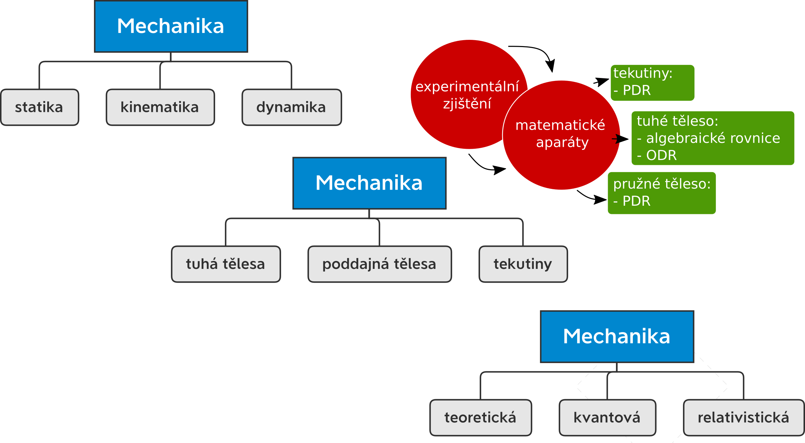
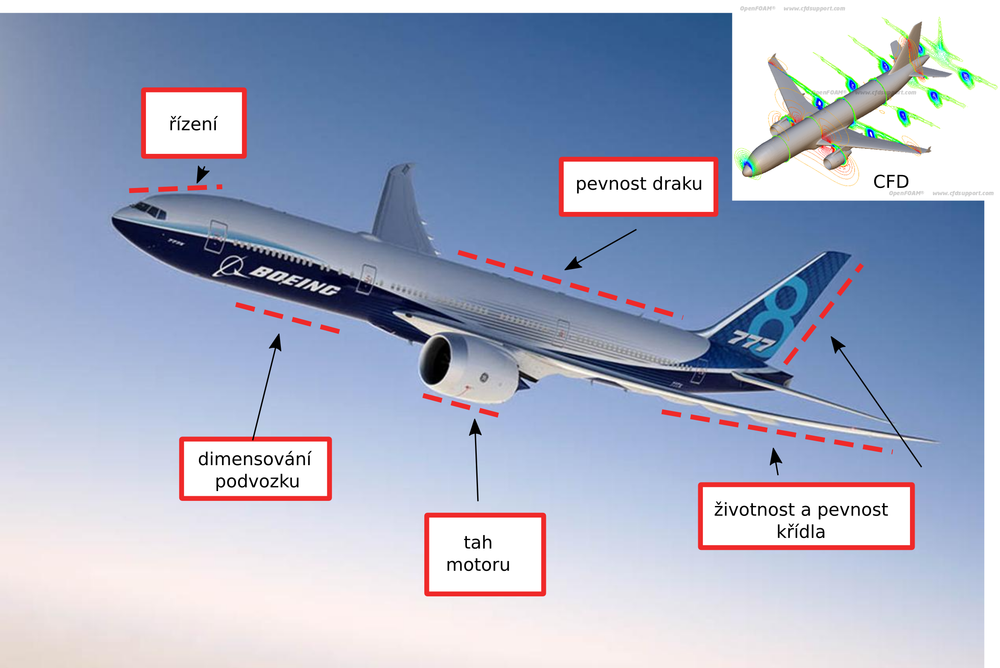
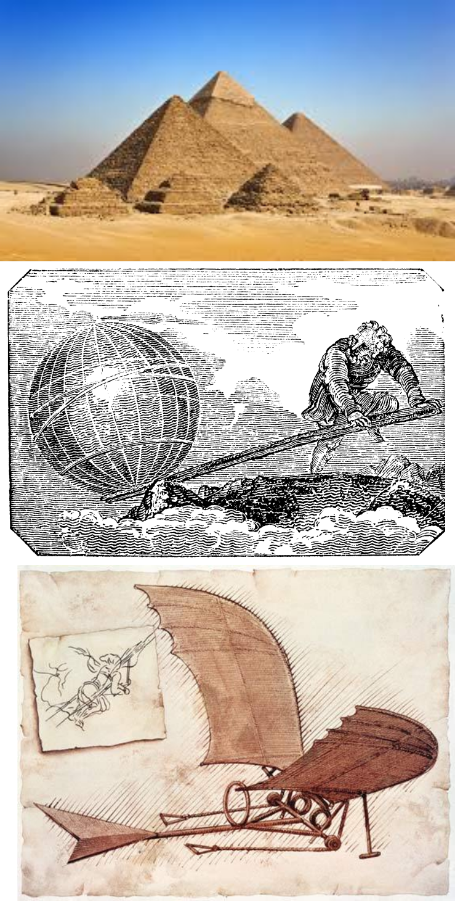
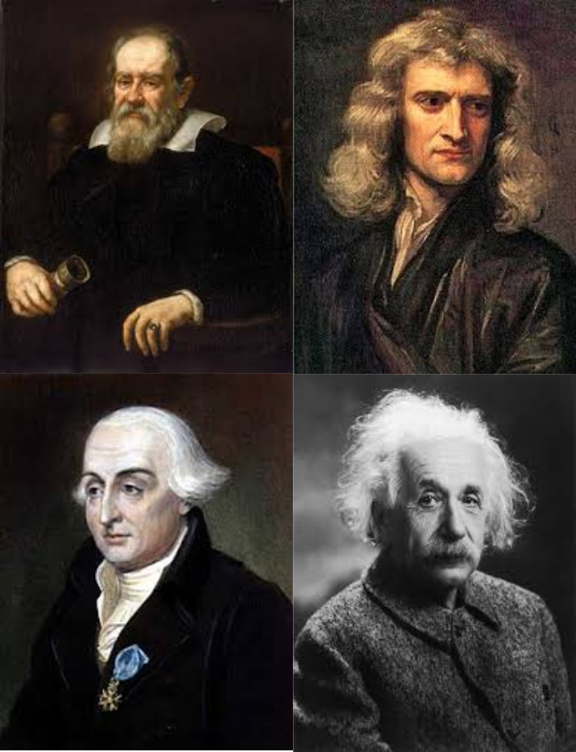
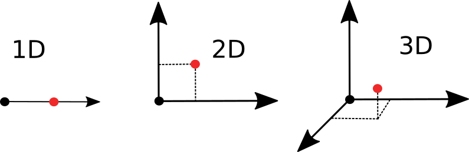
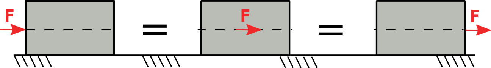
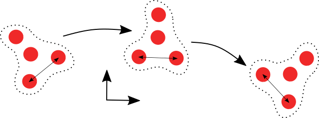

Úvod do mechaniky a její rozdělení (☕)¶
Mechanika je stará displína, která se dělí do mnoha podoborů. Nejjednodušší rozdělení spočívá v rozdělení podle sil, které působí na těleso, tj. rozdělení na:
statiku: na těleso nepůsobí setrvačné síly, čas není potřeba uvažovat
kinematiku: zajímají nás trajektorie těleso nehldě na síly, které na něj působí, čas musí být zahrnut
dynamiku: uvažujeme setrvačné síly a sledujeme jejich vliv na trajektorii tělesa.

Kromě tohoto základního rozdělení lze dělit mechaniku podle toho, zda je uvažujeme těleso, které je deformovatelné, nebo zda se jedná o tekutinu. Dalši rozdělení může být podle přístupu, tj. teoretická, kvantová nebo relativistická mechanika. Obor mechaniky je opřený experimentální vědy v kombinaci s pokročilými matematickými aparáty.
Využití mechaniky¶
Pro rychlou představu, letecký průmysl je království mechaniky:letadlo je navrhnuto s těmi nejlepšími poznatky z mechaniky, ať už se jedná o řízení, pevnost draku nebo tah motoru. Zkrátky bez mechaniky by to nelétalo…

Historie¶
Mechanika je stará. První zmínky jdou v ruku v ruce s porvnímy civilizacemi:
Egypt (2500 BC): páka, nakloněná rovina, valenı́ po válci
Archytas (400 BC): kladka
Archimédes (200 BC): vztlak, rovnováha na páce
da Vinci (1500 AC): momenty, momentová rovnováha
Kopernı́k (1500 AC): planetárnı́ mechanika

Nejpozději přišla dynamika, tehdy když bylo možné měřit přesněji čas. Nejznámější průkopníci jsou známé tváře:
Galileo (1600): kyvadlo
Newton (1700): základ klasické mechaniky: teorie gravitace, pohybové zákony
Lagrange (1780): formalismus mechanických zákonů, zobecněnı́ na základě energetických úvah
Albert Einstein (1905): teorie relativity (speciálnı́, obecná)
Planck, Schrodinger, Heisenberg, Dirac (1920): kvantová teorie

Základní pojmy v mechanice¶
Nejdříve si defimujme prostor:

prostor
jako trojrozměrný, spojitý, izotropní, euklidovský, inerciální a absolutní
Následuje pojem síly definované jako
síla
fiktivní veličina popisující faktickou interakci těles

Důležitou veličinou je čas, který můžeme definovat jako:
čas
skalárnı́, spojitá, ve všech bodech prostoru shodná, kladná rovnoměrně rostoucı́ veličina, charakterizujı́cı́ současnost a následnost jevů v prostoru.
Nejčastěji bude mít jednotky sekundy [s], hodiny [h] označení písmenem “t”. Dalším důležitou veličinou je hmotnost tělesa:
hmotnost
vlastnost projevu setrvačných a gravitačních sil
Zpravidla v jednotkách [kg].
hmotný bod
Hmotným bodem (HM) budeme uvažovat často abstraktní objekt, který je sice hmotný, ale nemá bodový (tj. nemá nelze na něm definovat míru plochy, objemu…)
Definice hmotného bodu je často používána ve statice nebo kinematice, kde nás zajímá jenom pohyb tělesa nebo síly nebo vnější síly, které na něj působí.
tuhé těleso
Tuhé těleso je soustava hmotných bodů, které během pohybu vzájemně nemění polohu.

Koncept tuhého tělesa budeme využívat v celé mechanice. Dovoluje se nám zanedbat fakt, že se těleso během pohybu a působení sil na něj, může deformovat.